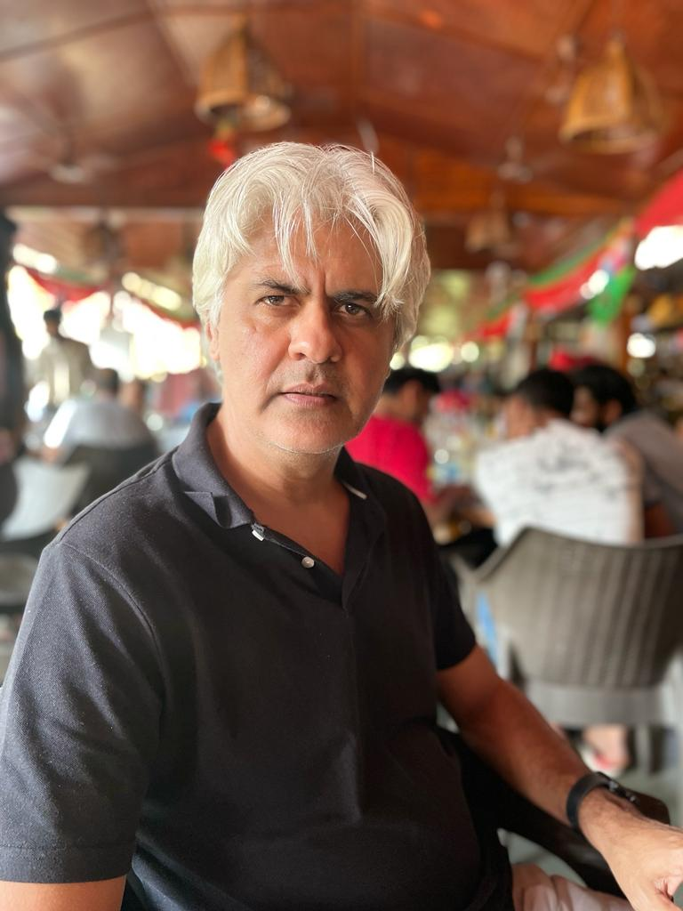

Professor of Computer Science
Director, Safexpress Centre for Data, Learning and Decision Sciences (SCDLDS)
Ashoka University
Visiting Professor
Department of Electrical Engineering
Indian Institute of Technology Bombay
Former Senior Professor and Dean
School of Technology and Computer Science
Tata Institute of Fundamental Research, Mumbai
Email: sandeep.juneja([( at )]) ashoka dot edu dot in

My research interests are primarily in applied probability - Am especially interested in bandit methods in learning theory, financial mathematics, Monte Carlo methods; game theory applied to queues; Modelling epidemic processes, monsoon precipitation modelling using machine learning tools.
Publications (Includes papers available online)
Brief Bio
Resume (Last updated October 2025)
My Academic Family Tree
Program on DATA SCIENCE: PROBABILISTIC AND OPTIMIZATION METHODS JULY 3-7, 2023. HYBRID. ICTS BANGALORE